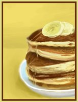

124 Broadway Newport, RI 02840, 401-619-4433
04/1/09 The Hungry Monkey Quickly Becomes a Local's and Visitor's Favorite! Thanks to you, our new breakfast and lunch spot in town has become a favorite destination! Thank you for your support!
03/1/09 The Hungry Monkey Opens for Business! In the midst of a challenging economy, a new restaurant business has emerged in Newport, RI serving up a complete breakfast and lunch menu! With delicious food, amazing service and an entirely brand new creative interior design, The Hungry Monkey is alive!
Now open for business, we are pleased to introduce you to our new spot in town for a delicious breakfast and lunch daily - The Hungry Monkey!
Owned and operated entirely by locals with over 50 years of combined experience in restaurant and hospitality services, our mission is to provide delicious food, amazing customer service, and a clean, creative and desirable atmosphere for our customers to enjoy.
Whether we share the same neighborhood, or you're visiting Newport from afar, we wish to welcome you to "The Monkey", and we look forward to serving you soon.
Thank you for your support!